AnyPortrait > マニュアル > ボーンを同期してコスチュームを変更
ボーンを同期してコスチュームを変更
1.3.4
AnyPortraitを利用してゲームを作成するユーザーの皆様の「キャラクターの衣装を交換する」について多くのフィードバックをいただきました。
私たちのチームは、キャラクターの衣装を変える方法を下記のようにご案内しました。
- キャラクターの衣装を交換
- 他のキャラクターとの同期
しかし、より効率的に制作をするために私たちは別の方法を考えました。
多くのゲームのプロジェクトでボーンを利用して、キャラクタアニメーションを制作するという点では、ボーンを同期する方法がかなり有用であると私たちは考えています。
このページで紹介する方法は、次の場合に非常に便利になります。
- 「ボディ」の大きさが一定して、付着されている「コスチューム」の数が多い場合
- 「コスチューム」に別のアニメーションを作成せずにたい場合
- 「コスチューム」のほとんどのボーンが「ボディ」のボーンを共有している場合
- ボーンの大きさを変更しない場合

このページで取り上げキャラクターや衣装のイメージです。
すべてのPSDファイルとして作成された。
このページでは、「コスチューム（Costume1、2、3）」をそれぞれ「ボディ（MainCharacter）に」同期しながらコスチュームを交換する方法を紹介します。
ボディのキャラクターを作成

まず、元となる「ボディ（MainCharacter）」を作ってみましょう。
PSDファイルをインポートして、キャラクターを製作します。

(1) 「Riggingモディファイヤ」を利用して、ボーンとメッシュを接続し、また、「Transform（Animation）モディファイヤ」を追加します。
(2) 2つのアニメーションを制作しました。
これで、「ボディ（MainCharacter）」が完成しました。
コスチューム作成
「コスチューム」を作成する方法は、大きく二つがあります。
簡単な方法は、「ボディ」のボーンをファイルにエクスポートし、再び新たなapPortraitに持って来てリギングする方法です。
ボーンをファイルにエクスポートおよびインポートする方法は、以下のページで確認することができます。
- 骨の設定をエクスポート/インポート
しかし、同期されているオブジェクトを精巧に接続するためには、繊細なリギングをする必要があります。
したがって、別の方法である「複製してリギングする」方法をご紹介します。

この方法は、「ボディ」を複製して、「コスチューム」を取り付けた状態で新しい完成されたキャラクターを作成することが重要な点です。
(1) Unityシーンで、作成した「MainCharacter」を複製し、これの名前を「Costume1」に変更します。
(2) 名前が異なる同じ2つのキャラクターを見ることができます。「複製されたCostume1」キャラクターを選択して編集してみましょう。（以降、ボディキャラクターを編集しません。）

AnyPortraitエディタで「Costume1」キャラクターを開きます。
まだ修正されていない状態なので、「MainCharacter」と全く同じ状態です。
(1) コスチュームのPSDイメージファイルを開いてみましょう。
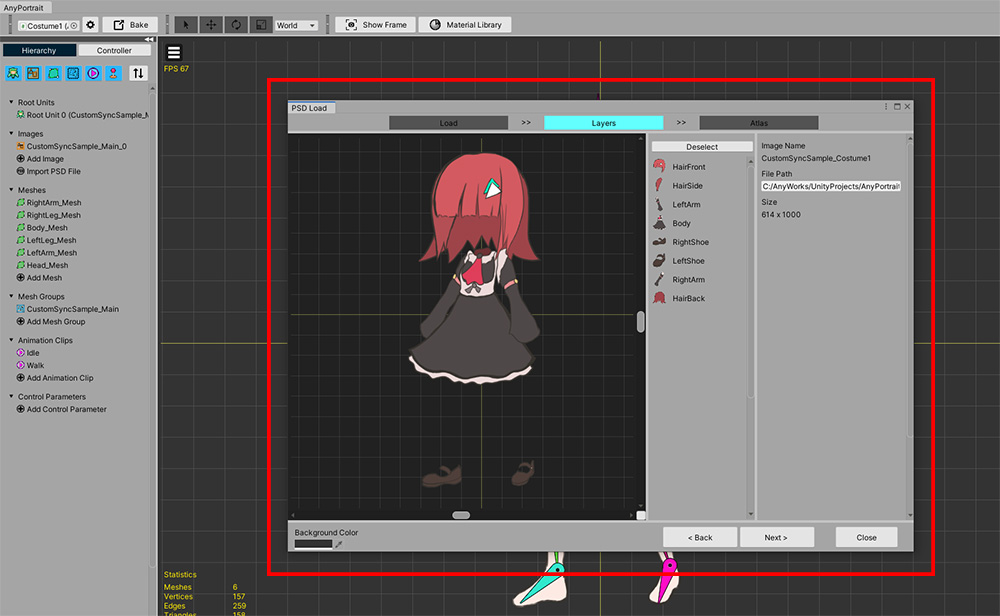
「コスチューム」のPSDイメージファイルをインポートします。
この時、注意する必要がある点があります。
- 「ボディ」のPSD画像の大きさと、「コスチューム」のPSD画像のサイズが同じである必要があります。
- PSD画像上で「ボディ」と「コスチューム」の位置がぴったり合わなければします。
上記の条件を満たしていない「コスチューム」イメージファイルを開いた場合は、手作業でメッシュの位置を調整する必要があります。
コスチュームのPSDファイルを「Atlas」に「Bake」して、現在のapPortraitに取得します。
「Atlas Bake設定」は「ボディ」の設定と、あえて同じでなくてもかまいません。
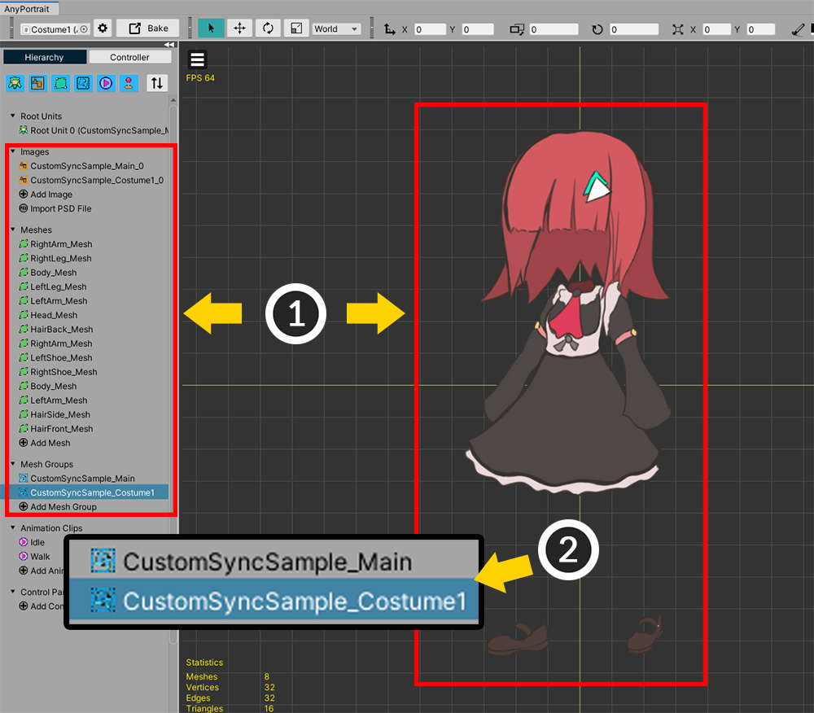
(1) 「コスチューム」の画像のオブジェクトがさらに生成されました。
(2) 特に、「コスチューム」の新たなメッシュグループが作成されたことを確認してください。

次の作業は、「ボディ」のメッシュグループに「コスチューム」というメッセージを重なることです。
(1) 元の「ボディ」のメッシュグループを選択します。
(2) 「+ ボタン」を押します。
(3) 「Mesh Groupタブ」を選択します。
(4) 追加された衣装の「メッシュグループ」を選択します。
(5) 「Addボタン」を押します。

(1) ここで、「コスチューム」というメッセージがあるメッシュグループが合わさったことがわかります。
ここで「コスチューム」というメッセージを移しつのメッシュグループだけ残してみましょう。
（このプロセスは、不要なデータを減らすためです。必須ではありません選択的なプロセスです。）
(2) 「コスチューム」メッシュグループ内のメッシュを選択します。（ Shift を押して選択すると、便利です。）
(3) 「Migrateボタン」を押します。
(4) 二つの「メッシュグループ」が表示されることです。ルートメッシュグループである「ボディ」に対応するメッシュグループを選択します。
(5) 「Selectボタン」を押します。
(6) 「Migrate」機能を使用するときは、データ前処理で問題が発生することができて注意する必要があります。（関連ページ）「OKボタン」を押してくれます。

「コスチューム」のメッシュグループ内のメッシュがルートメッシュグループに移動しました。

空のメッシュグループを削除します。
(1) 「コスチュームメッシュグループ」を選択します。
(2) 「Detachボタン」を押します。
(3) メッセージの「Detachボタン」を押して、メッシュグループを分離します。
これで、メッシュグループが除外されました。
「Detach」の後、「左のHierarchy」から「コスチュームメッシュグループ」を削除してください。
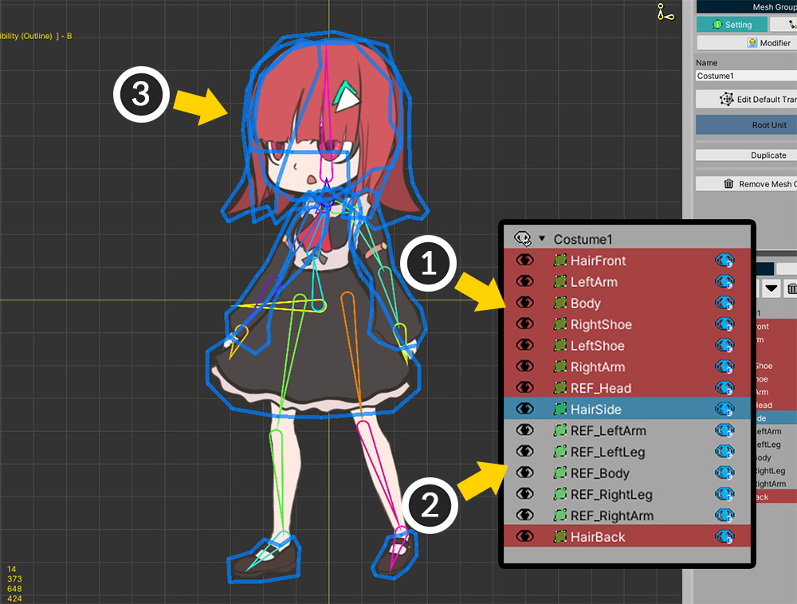
(1) 上記のように「ボディ」と「コスチューム」が適切に表示されるように、「コスチューム」というメッセージのレンダリング順序を変更してみましょう。
(2) 「コスチューム」というメッセージと、「ボディ」というメッセージを区別するために、「ボディ」というメッセージの名前の前に「REF_」という接頭辞を付けてみましょう。
(3) 「コスチューム」というメッセージを編集して完成してリギングのための準備をします。
もし「コスチューム」のPSDファイルを読み込む際の注意事項が守られなかった場合は、この段階では、「ボディ」と「コスチューム」メッシュの位置が合わないことです。
もしそうなら、この段階で「コスチューム」メッシュの位置を適切に変更します。

リギングをする前に、ボーンを追加することができます。
(1) 髪の毛の動きを表現するためのボーンを追加しました。
髪のボーンをボディの「Head」のボーンの子として接続しました。

(1) スカートの動きのためのボーンも追加します。
(2) 「Jiggle Bone」に設定して、別のアニメーションがなくても、物理的な揺れを持つようにすることができます。
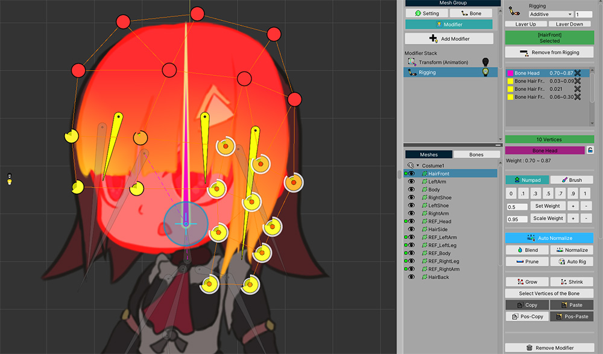
次に、コスチュームメッシュに対してリギングをみましょう。
「Riggingモディファイヤ」を選択して、メッシュを追加した後の重みを割り当てます。
（「Riggingモディファイヤ」は、すでに存在するものです。）

コスチュームメッシュを対象にリギングをするとき、最も重要なことは、「ボディと重なる部分」で重みを割り当てる方法です。
重みを適切に割り当てられていなければ、キャラクターの手や足コスチュームをくぐって出てくる姿を見ることもあるでしょう。
このとき、「Pos-Copy」機能を使用すると、このような悩みを少なくすることができるでしょう。（関連ページ）
(1) 重なっている「ボディ」のメッシュのすべての頂点を選択します。
(2) 「Pos-Copyボタン」を押してリギング重みをコピーします。

(3) コスチュームメッシュの頂点を選択します。
(4) 「Pos-Pasteボタン」を押して、コピーされた重みを頂点に割り当てられます。

ボーンを動かしてみると、ボディのメッシュとコスチュームメッシュが一緒に動くのを見ることができます。
この段階での重みをより精密に変更する必要があるが、それでもこの機能を介して多くの作業時間を短縮することができるでしょう。

すべてのメッシュを対象にリギングを終えたらキャラクターが服を着たように、自然に動くことです。
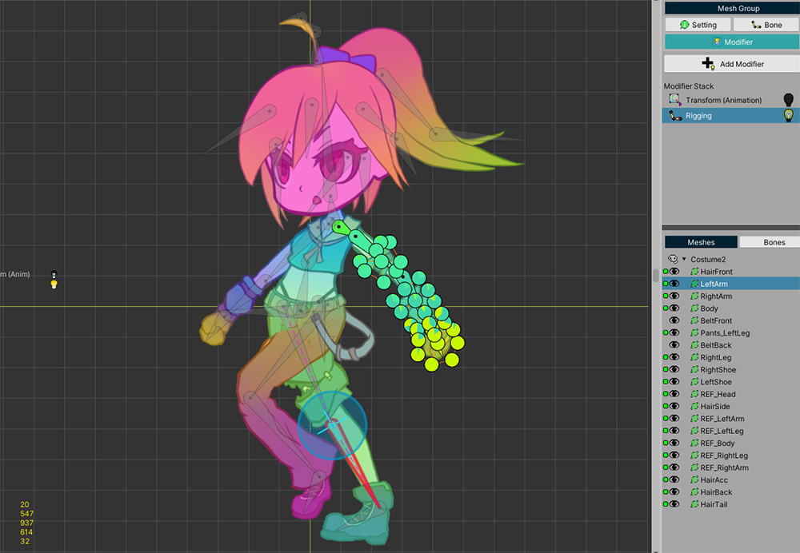
同じように、他のコスチューム（Costume2、Costume3）も作ってあげましょう。
（それぞれのコスチュームは、異なるapPortraitで製作する必要があります。）
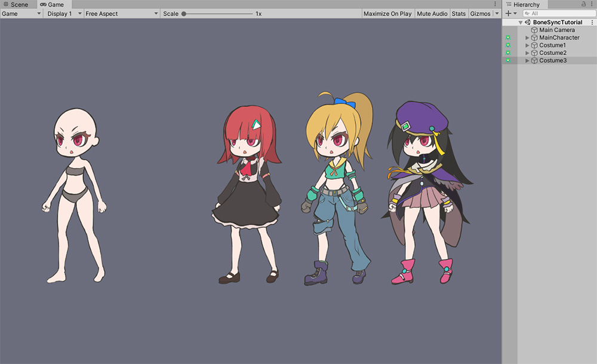
現在の段階までに完成された画面です。
ボディキャラクター（MainCharacter）とコスチュームが加えられた3つのキャラクター（Costume1、2、3）このシーンに配置されました。
まだコスチュームとキャラクターが合わさった状態なので、「Costume1、2、3」でボディのキャラクターのメッシュを除去する作業が残っています。

「コスチュームキャラクター（Costume1、2、3）」をAnyPortraitエディタで開き、「メッシュグループ」を選択します。
(1) ボディのメッシュを選択します。先に対応するメッシュの名前に「REF_」を付けた場合、区分することが容易になります。
(2) 「Detachボタン」を押します。
(3) メッセージの「Detachボタン」を押します。
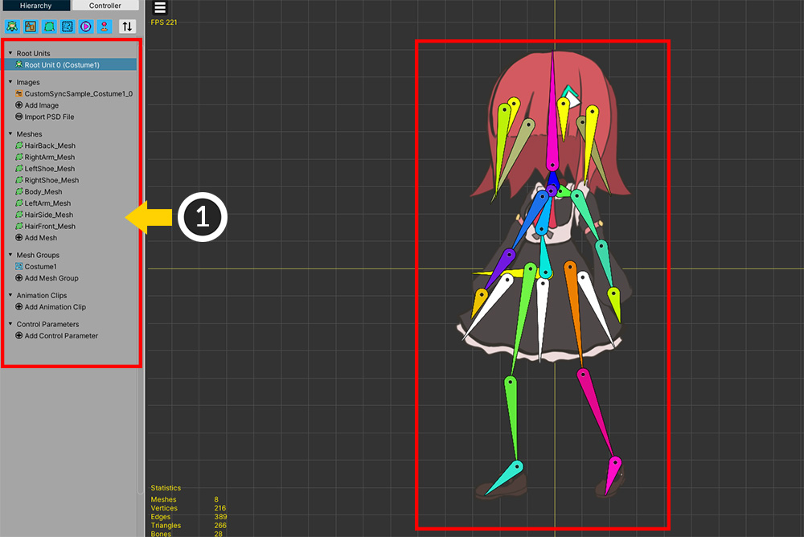
(1) そのほかにも、「ボディ」のキャラクターの画像は、メッシュもすべて削除します。
今、上記のように「コスチューム」の画像は、メッシュ、メッシュグループのみ残りました。
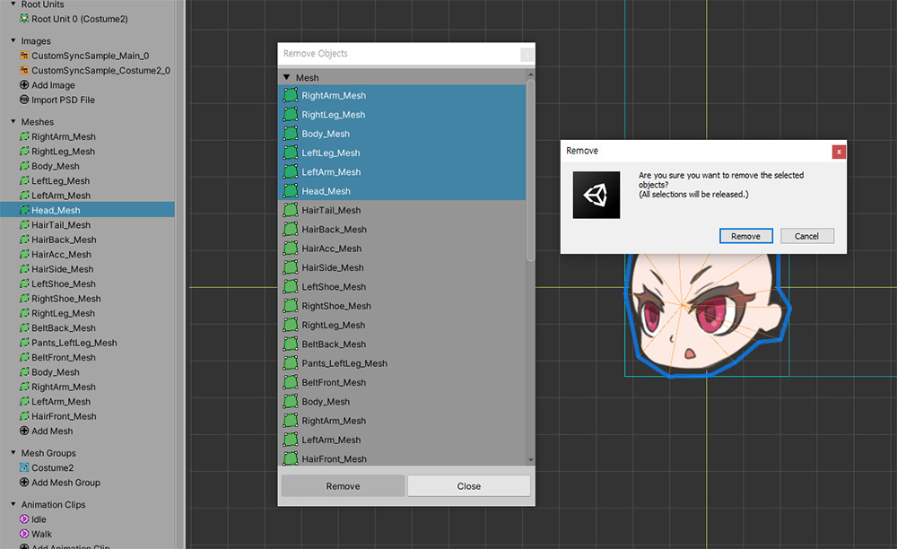
複数の画像やメッシュを削除するとき、いちいち選択して削除することは非常に面倒なことです。
Hierarchyで右クリックをした後、上記のように複数を一度に削除することができます。
この機能については、関連ページを参照してください。
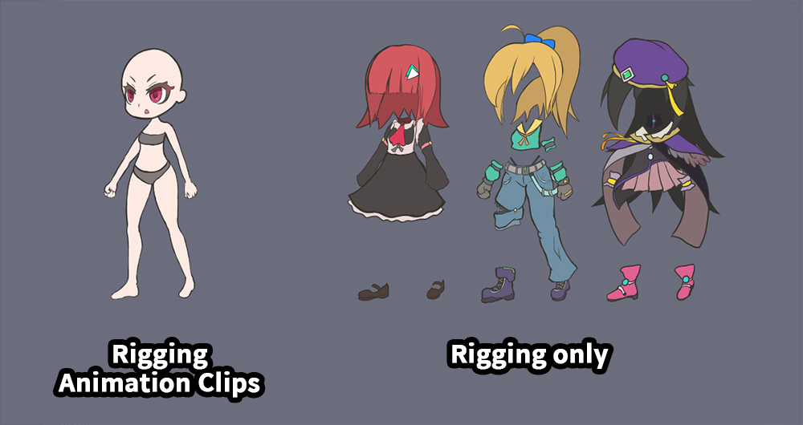
このプロセスをすべて終えたなら、上記のように1つの「ボディのキャラクター」と3つの「コスチュームのキャラクター」がシーンに配置されます。
- ボディキャラクターやコスチュームはほぼ同じボーンを持っており、「Riggingモディファイヤ」が同様に適用されています。
- ボディのキャラクターだけ「Transform（Animation）」と「アニメーション」を持ちます。
スクリプトを作成して同期
次のステップは、スクリプトを作成してコスチュームをボディキャラクターに付着することです。

上記のように思ったことをスクリプトで作成試みることです。
- 「Character Group」という別のGameObjectに「ボディ（MainCharacter）」を子として登録します。
- 「コスチューム」を付したときに「Character Group」の子として登録します。「ボディ」と「コスチューム」が一緒に動くために「Character Group」だけ制御するようにすることができます。
- レンダリングの問題を解決するために、 「Character Group」に「Sorting Group」コンポーネントを追加します。
- コスチュームとボディキャラクター間のボーンの動きを同期します。
上記の内容をすべて盛り込んだスクリプトを作成してみましょう。
新しいC＃スクリプトを作成し、以下のように作成してみましょう。
using UnityEngine;
using AnyPortrait;
public class BoneSyncScript : MonoBehaviour
{
public Transform characterGroup;
public apPortrait mainCharacter;
public apPortrait costume1;
public apPortrait costume2;
public apPortrait costume3;
void Start() { }
void Update()
{
//QやWキーを押して、ボディのキャラクターのアニメーションを再生します。
if(Input.GetKeyDown(KeyCode.Q)) { mainCharacter.Play("Idle"); }
if(Input.GetKeyDown(KeyCode.W)) { mainCharacter.Play("Walk"); }
//数字キー1を押すと、すべてのコスチュームの付着が解除され、コスチューム1が付きます。
if(Input.GetKeyDown(KeyCode.Alpha1))
{
DetachCostumes();
AttachCostume1();
}
//数字キー2を押すと、すべてのコスチュームの付着が解除され、コスチューム2が付きます。
if(Input.GetKeyDown(KeyCode.Alpha2))
{
DetachCostumes();
AttachCostume2();
}
//数字キー3を押すと、すべてのコスチュームの付着が解除され、コスチューム3が付きます。
if(Input.GetKeyDown(KeyCode.Alpha3))
{
DetachCostumes();
AttachCostume3();
}
//数字キー4を押すと、すべてのコスチュームの付着が解除されます。
if(Input.GetKeyDown(KeyCode.Alpha4))
{
DetachCostumes();
}
}
//コスチュームの付着をすべて解除する関数
private void DetachCostumes()
{
//Unsynchronize関数を呼び出して、この同期をオフにします。
costume1.Unsynchronize();
costume2.Unsynchronize();
costume3.Unsynchronize();
//親GameObjectから独立させます。（位置は見事に適切に分散させた。）
costume1.transform.parent = null;
costume1.transform.position = new Vector3(0, 0, 0);
costume2.transform.parent = null;
costume2.transform.position = new Vector3(4, 0, 0);
costume3.transform.parent = null;
costume3.transform.position = new Vector3(8, 0, 0);
}
//コスチューム1（Costume1）をCharacter Groupの子として登録し、
//ボディキャラクターのボーンの動きと同期をします。
private void AttachCostume1()
{
// Character Groupの子として登録し、Local位置を初期化します。
costume1.transform.parent = characterGroup;
costume1.transform.localPosition = Vector3.zero;
// Synchronize関数を用いて、ボーンの動きを同期させることができます。
costume1.Synchronize(mainCharacter, false, false, false, true, SYNC_BONE_OPTION.MatchFromRoot);
}
//コスチューム2（Costume2）をCharacter Groupの子として登録し、
//ボディキャラクターのボーンの動きと同期をします。
private void AttachCostume2()
{
// Character Groupの子として登録し、Local位置を初期化します。
costume2.transform.parent = characterGroup;
costume2.transform.localPosition = Vector3.zero;
// Synchronize関数を用いて、ボーンの動きを同期させることができます。
costume2.Synchronize(mainCharacter, false, false, false, true, SYNC_BONE_OPTION.MatchFromRoot);
}
//コスチューム3（Costume3）をCharacter Groupの子として登録し、
//ボディキャラクターのボーンの動きと同期をします。
private void AttachCostume3()
{
// Character Groupの子として登録し、Local位置を初期化します。
costume3.transform.parent = characterGroup;
costume3.transform.localPosition = Vector3.zero;
// Synchronize関数を用いて、ボーンの動きを同期させることができます。
costume3.Synchronize(mainCharacter, false, false, false, true, SYNC_BONE_OPTION.MatchFromRoot);
}
}
ここで最も重要なスクリプトは、「AttachCostume」関数の中にあります。
「characterGroup」の子として登録するコードとドブルオソ「Synchronize」関数を使用する部分を慎重に確認してください。
必要であればアニメーション、制御パラメータまたはルートユニットを同期することも可能です。
「Synchronize」関数の詳細説明は、関連ページで確認でき、また、「ボーンの同期」の詳細な説明をこのページの下部に見ることができます。
今作成したスクリプトをシーンに配置して動作するように作成します。
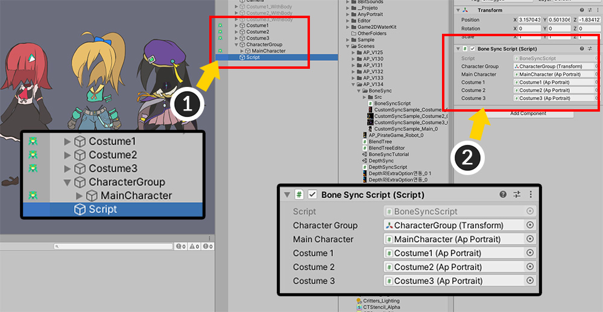
(1) 「CharacterGroup」という名前のGameObjectを作成し、「ボディキャラクター（MainCharacter）」を子として追加します。また、「スクリプト」を配置する新しいGameObjectを作成します。
(2) スクリプトをコンポーネントに追加し、それぞれの要素を接続します。
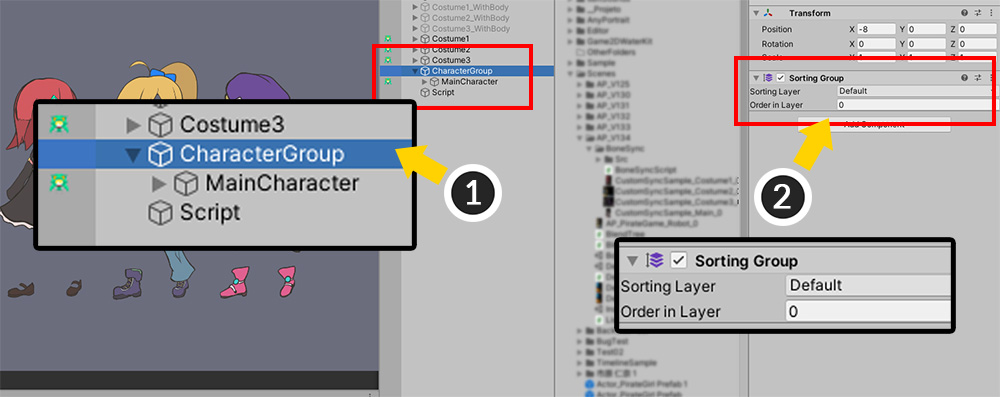
(1) 「CharacterGroup」を選択し、 (2) 「Sorting Group」コンポーネントを追加します。
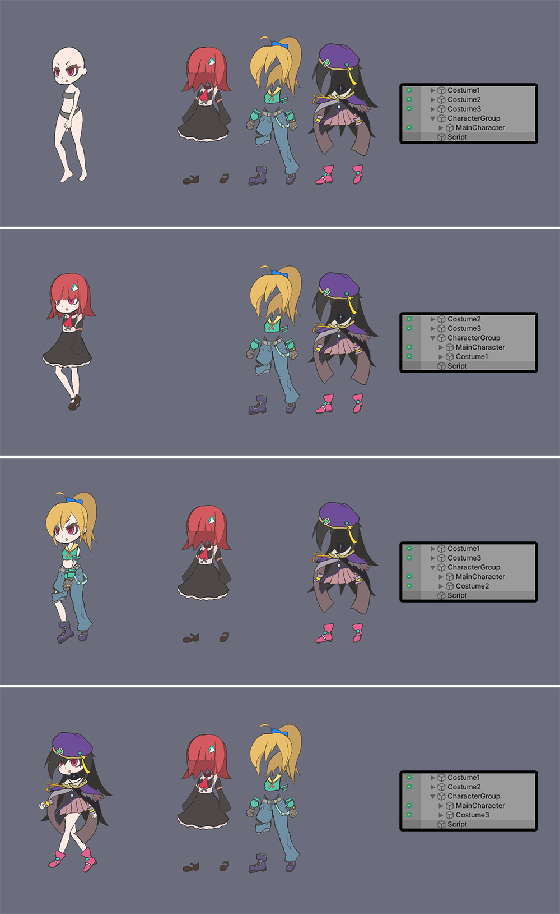
ゲームを実行すると、スクリプトが動作し、キャラクターのコスチュームを1つずつ交換を試みることができます。
ボーンが同期され、キャラクターとコスチュームが一つになったかのように動きます。
メッシュのレンダリング順序を変更

基本的な同期はすべて終わったが、まだ作業が残っています。
合わさったキャラクターを詳しく見ると、重なったメッシュのレンダリング順序が適切ではありません。

「コスチューム1（Costume1）」の場合には、上記のような順序でメッシュが表示されるようにデザインがされた。
上記の手順に合わせてメッシュのレンダリング順序を割り当てるようにスクリプトを修正してみましょう。
（レンダリングの順序を設定する方法を扱う方法の詳細についてについては、「関連ページ」で確認できます。）
（前略）
//コスチューム1（Costume1）をCharacter Groupの子として登録し、
//ボディキャラクターのボーンの動きと同期をします。
private void AttachCostume1()
{
// Character Groupの子として登録し、Local位置を初期化します。
costume1.transform.parent = characterGroup;
costume1.transform.localPosition = Vector3.zero;
// Synchronize関数を用いて、ボーンの動きを同期させることができます。
costume1.Synchronize(mainCharacter, false, false, true, SYNC_BONE_OPTION.MatchFromRoot, false);
//コスチューム1メッシュのレンダリングの順序（Sorting Order）をボディのメッシュに基づいて変更します。
costume1.SetSortingOrder("HairFront", mainCharacter.GetSortingOrder("Head") + 1);
costume1.SetSortingOrder("LeftArm", mainCharacter.GetSortingOrder("LeftArm") + 1);
costume1.SetSortingOrder("Body", mainCharacter.GetSortingOrder("LeftLeg") + 2);
costume1.SetSortingOrder("LeftShoe", mainCharacter.GetSortingOrder("LeftLeg") + 1);
costume1.SetSortingOrder("RightShoe", mainCharacter.GetSortingOrder("RightLeg") + 1);
costume1.SetSortingOrder("HairSide", mainCharacter.GetSortingOrder("RightArm") + 1);
costume1.SetSortingOrder("HairBack", mainCharacter.GetSortingOrder("RightArm") - 10);
}
//コスチューム2（Costume2）をCharacter Groupの子として登録し、
//ボディキャラクターのボーンの動きと同期をします。
private void AttachCostume2()
{
// Character Groupの子として登録し、Local位置を初期化します。
costume2.transform.parent = characterGroup;
costume2.transform.localPosition = Vector3.zero;
// Synchronize関数を用いて、ボーンの動きを同期させることができます。
costume2.Synchronize(mainCharacter, false, false, true, SYNC_BONE_OPTION.MatchFromRoot, false);
//コスチューム2メッシュのレンダリングの順序（Sorting Order）をボディのメッシュに基づいて変更します。
costume2.SetSortingOrder("HairFront", mainCharacter.GetSortingOrder("Head") + 1);
costume2.SetSortingOrder("HairSide", mainCharacter.GetSortingOrder("Head") - 1);
costume2.SetSortingOrder("LeftArm", mainCharacter.GetSortingOrder("LeftArm") + 1);
costume2.SetSortingOrder("Body", mainCharacter.GetSortingOrder("Body") + 1);
costume2.SetSortingOrder("BeltFront", mainCharacter.GetSortingOrder("LeftLeg") + 4);
costume2.SetSortingOrder("Pants_LeftLeg", mainCharacter.GetSortingOrder("LeftLeg") + 3);
costume2.SetSortingOrder("BeltBack", mainCharacter.GetSortingOrder("LeftLeg") + 2);
costume2.SetSortingOrder("LeftShoe", mainCharacter.GetSortingOrder("LeftLeg") + 1);
costume2.SetSortingOrder("RightLeg", mainCharacter.GetSortingOrder("RightLeg") + 2);
costume2.SetSortingOrder("RightShoe", mainCharacter.GetSortingOrder("RightLeg") + 1);
costume2.SetSortingOrder("RightArm", mainCharacter.GetSortingOrder("RightArm") + 1);
costume2.SetSortingOrder("RightArm", mainCharacter.GetSortingOrder("RightArm") + 1);
costume2.SetSortingOrder("HairBack", mainCharacter.GetSortingOrder("RightArm") - 10);
costume2.SetSortingOrder("HairAcc", mainCharacter.GetSortingOrder("RightArm") - 11);
costume2.SetSortingOrder("HairTail", mainCharacter.GetSortingOrder("RightArm") - 12);
}
//コスチューム3（Costume3）をCharacter Groupの子として登録し、
//ボディキャラクターのボーンの動きと同期をします。
private void AttachCostume3()
{
// Character Groupの子として登録し、Local位置を初期化します。
costume3.transform.parent = characterGroup;
costume3.transform.localPosition = Vector3.zero;
// Synchronize関数を用いて、ボーンの動きを同期させることができます。
costume3.Synchronize(mainCharacter, false, false, true, SYNC_BONE_OPTION.MatchFromRoot, false);
//コスチューム3メッシュのレンダリングの順序（Sorting Order）をボディのメッシュに基づいて変更します。
costume3.SetSortingOrder("Hat", mainCharacter.GetSortingOrder("Head") + 2);
costume3.SetSortingOrder("HairFront", mainCharacter.GetSortingOrder("Head") + 1);
costume3.SetSortingOrder("LeftArmFront", mainCharacter.GetSortingOrder("LeftArm") + 4);
costume3.SetSortingOrder("LeftHand", mainCharacter.GetSortingOrder("LeftArm") + 3);
costume3.SetSortingOrder("RightArmFront", mainCharacter.GetSortingOrder("LeftArm") + 2);
costume3.SetSortingOrder("Neck", mainCharacter.GetSortingOrder("LeftArm") + 1);
costume3.SetSortingOrder("LeftArmBack", mainCharacter.GetSortingOrder("LeftArm") - 1);
costume3.SetSortingOrder("BodyFront", mainCharacter.GetSortingOrder("LeftLeg") + 3);
costume3.SetSortingOrder("Skirt", mainCharacter.GetSortingOrder("LeftLeg") + 2);
costume3.SetSortingOrder("LeftShoe", mainCharacter.GetSortingOrder("LeftLeg") + 1);
costume3.SetSortingOrder("RightShoe", mainCharacter.GetSortingOrder("RightLeg") + 1);
costume3.SetSortingOrder("BodyBack", mainCharacter.GetSortingOrder("RightLeg") - 1);
costume3.SetSortingOrder("RightHand", mainCharacter.GetSortingOrder("RightArm") + 1);
costume3.SetSortingOrder("RightArmBack", mainCharacter.GetSortingOrder("RightArm") - 1);
costume3.SetSortingOrder("HairBack", mainCharacter.GetSortingOrder("RightArm") - 10);
}
}
衣装に応じてメッシュが異なって構成されるので、メッシュの「Sorting Order」を指定するコードがそれぞれ異なります。
上記のスクリプトは、説明のためにラフに作成された、別のルールを作成するなどの、より洗練され、スクリプトを作成することも可能になります。

今シーンに戻って、「Sorting Order」オプションを設定します。
(1)「本体キャラクター（MainCharacter）」を選択します。
(2) 「Sorting Order Option」を「Depth To Order」に設定し、「Order Per Depth」を適度に大きな値を指定します。ここでは 「10」を指定しました。

ボーン同期を利用して、キャラクターのコスチュームを交換する例が完成しました！
ボーン同期条件とオプション
ボーンの同期の特性は以下のとおりです。
- ボーンの同期条件は大きく、「名前」と「構造」です。
- 同期をするためには、同期対象となるボーンの間の名前が同じです。
- 名前が同じである場合、ルートボーンから「親-子」の構造が同じである必要があります。ただし、これはオプションに応じて少し異なります。
- ボーンの位置、形状、大きさは、同期条件で考慮されません。
- 偶然同じ名前のボーンが意図せずに同期させることができるので、名前をよく設定する必要があります。
- 基本的には、ルートのボーンから同じ構造を持つ必要があります。
- 「ルートユニット（Root Unit）」の順に検討します。同じ番号のルートユニットに含まれているボーンとの同期を試みます。
- いくつかの同期されていないボーンがあってもかまいません。
ただし、同期のオプションに応じて同期の結果が少し異なります。

同期のオプションによる同期の結果の違いの図式です。
「Synchronize」関数の引数である「SYNC_BONE_OPTION」の値に応じて同期の結果が変わります。
- MatchFromRoot：ルートのボーンから同じ構造を持つ必要があり、同期がされます。
- MatchFromSubBones：同期されているボーンの中のルートのボーンが対象キャラクターのルートボーンがなくても、同期がされます。上記の場合、「Arm1 > Arm2 > Hand」の場合はこれに該当します。（逆は同期されません。）
1.3.5
複数の「テクスチャアトラス（Atlas）」を利用する場合は、「Draw Call」が大幅に増加することができます。
共通のテクスチャを利用する方法や、別の最適化手法が必要です。
私たちのチームもこの問題につきましては悩み中です。
「マテリアルマージ」機能を利用してみてください。 （該当ページに移動）